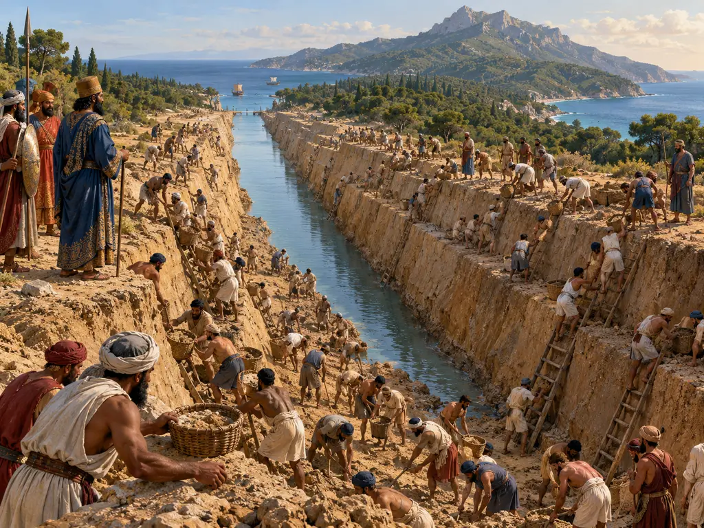
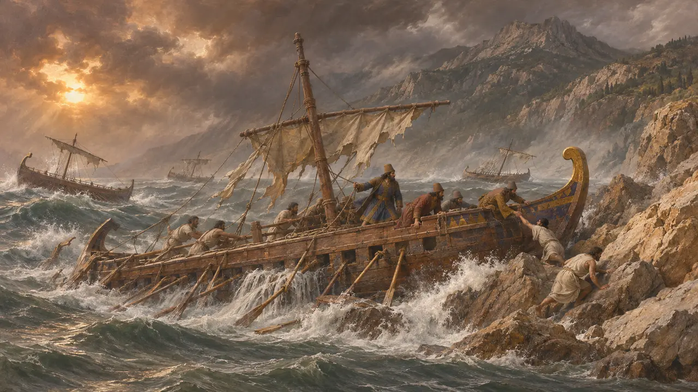
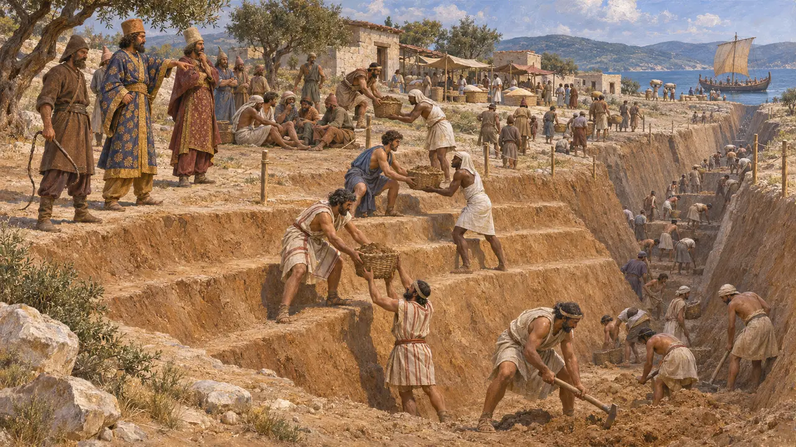
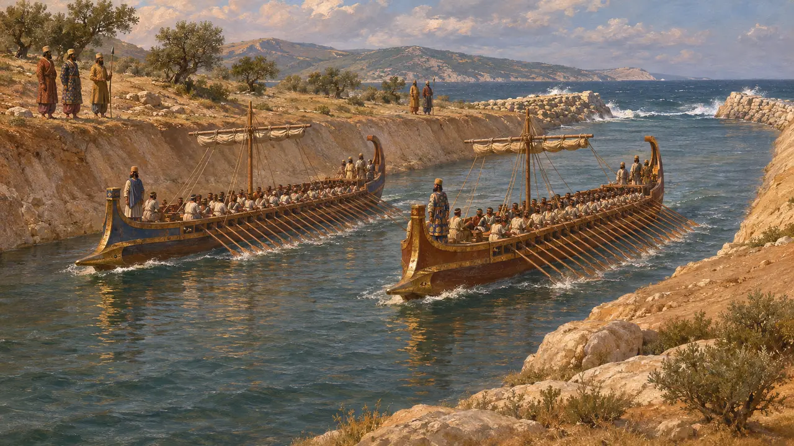
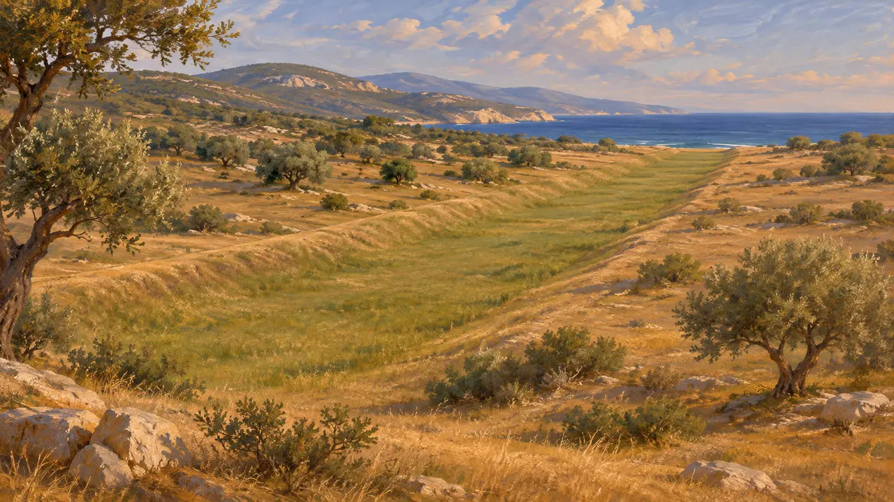
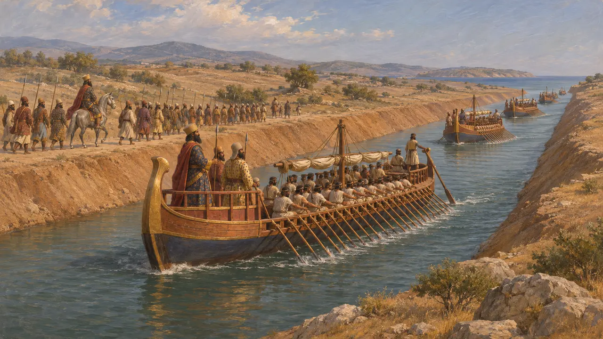
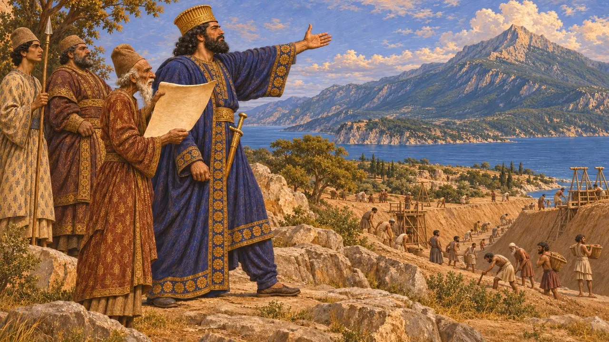

クセルクセスの運河は、アトス半島の狭い頸部を横切って掘られた水路である。紀元前492年にペルシア艦隊が難破した危険な岬を、王の艦隊が避けられるようにするためのものだった。ヘロドトスはこの工事を詳しく記しており、現代の調査によって運河が実在したことも確かめられている。帝国全土から労働力、食料、技術を動かす王の力がどこまで及んだかを示すものである。
ゲームでは： 運河は地峡を横切り、両端を水辺に接して開削される。掘り手の食料には大麦を、突堤には石灰岩を、梯子と籠には木材を用いる。ヘロドトスの記す突堤は土を盛ったものであり、石灰岩を用いるのはゲーム独自の改変である。

きっかけとなった難破
古代の記述ヘロドトスによれば、紀元前492年、マルドニオス率いる艦隊はアトス山を回航中に嵐に遭い、岩場へと打ち上げられた。彼は損害をおよそ300隻、兵20,000人以上としているが、歴史家はこの数字を慎重に扱っている。ヘロドトスは運河をこの惨事と直接結びつけ、アトスの工事の準備にはおよそ3年を要したと述べている。
Herodotus 6.44; Herodotus 7.22

掘削はいかに行われたか
古代の記述ヘロドトスによれば、全軍のあらゆる部隊から兵が送られ、ブバレスとアルタカイエスの指揮のもと、鞭で追い立てられながら交代で掘削にあたった。運河の線はサネの町のそばに引かれ、諸民族に区画が割り当てられた。底で掘る者が土を上の段にいる者へと渡していった。彼の言うところでは、溝の上部を広く取って側壁が崩れないようにしたのはフェニキア人だけであった。近くには市が立ち、アジアから船で運ばれた穀物や小麦粉が売られていたという。
Herodotus 7.22-23

完成した水路
古代の記述ヘロドトスによれば、運河は三段櫂船2隻が並んで漕ぎ進めるほどの幅があり、その両端の出入口には波浪を防ぐ突堤が築かれていたという。艦隊は紀元前480年、西へ向かう途上でここを通過した。のちにトゥキュディデスも、この地方の目印として王の運河に言及している。ヘロドトスはまた、アルタカイエスが近くのアカントスで没し、軍によって手厚く葬られたことも記している。
Herodotus 7.24; Herodotus 7.37; Herodotus 7.117; Herodotus 7.122; Thucydides 4.109

今日の遺跡が示すもの
同時代の記録1991年から2001年にかけて、英国とギリシアの合同調査団が物理探査、ボーリング、堆積物コアを用いて地峡を調査した。彼らはヘロドトスが記す線に沿って地峡を横切る、全長およそ2キロメートルの埋没した水路をたどった。土砂に埋もれたその流路はもはや水をたたえてはいないが、この調査によって運河が実在したのかという古くからの問いに決着がついた。
B. S. J. Isserlin et al., The Canal of Xerxes: Summary of Investigations 1991-2001, 2003

必要か、誇示か
係争中ヘロドトスは、船を陸路で地峡越しに曳くこともできたとして、この運河を驕りの所業と断じた。現代の歴史家の多くは実用上の理由を見出している。大艦隊の安全な航路を確保し、艦隊と陸軍の歩調を合わせて進ませるためである。また、ギリシアの諸都市に王の力を示す意図を重視する者もいる。ユウェナリスら一部のローマの著述家はこの話をギリシア人の作り話として嘲ったが、その疑いには現地調査が答えを出している。
Herodotus 7.24; P. Briant, From Cyrus to Alexander, 2002; Juvenal, Satires 10

山への書簡
後世の伝説約6世紀後に著述したプルタルコスによれば、クセルクセスはアトス山に宛てて書簡を送り、工事の妨げとなるなら切り崩して海に投げ込むと脅したという。この話は、ヘレスポントスを鞭打った逸話と同じく、王の傲慢を語るギリシアの物語群に属する。出来事の記録というより、怒りをめぐる教訓話である。
Plutarch, On the Control of Anger
出典
- Herodotus 6.44; 7.22-24, 7.37, 7.117, 7.122
- Thucydides 4.109
- B. S. J. Isserlin et al., The Canal of Xerxes: Summary of Investigations 1991-2001, 2003
- P. Briant, From Cyrus to Alexander, 2002
- Plutarch, On the Control of Anger
- Juvenal, Satires 10